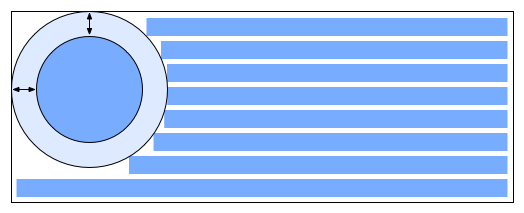
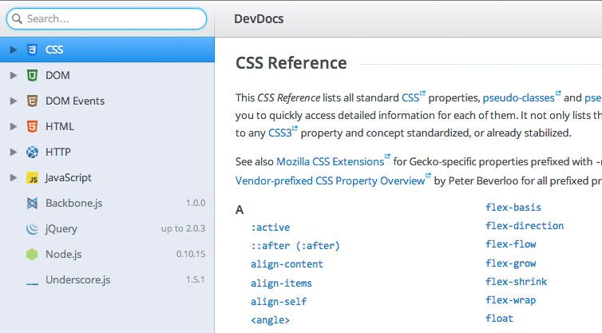

— Brian Moeskau (@bmoeskau)
— Ed Hemphill, Cofounder of WigWag
// Selects any LI with class "foo" inside an OL
OL > LI.foo
// Selects any OL containing an LI with class "foo"
!OL > LI.fooFirst Public Working Draft (June 2013)
CSS Shapes control the geometric shapes used for wrapping inline flow content outside an element... A circle shape on a float will cause inline content to wrap around the circle shape instead of the float's bounding box.
<style type="text/css">
#float-left {
shape-outside: polygon(0,0 100%,100% 0,100%);
/* etc. */
}
#float-right {
shape-outside: polygon(100%,0 100%,100% 0,100%);
/* etc. */
}
</style>Name the latest public/stable versions of:
Name the latest public/stable versions of:
First released with Win8 Preview last month
IE 11 Preview released July 25 for Win 7
New F12 developer tools (test drive now)
Released July 10
Released August 6 (Today!)
And my favorite:
Dropped blink effect from text-decoration: blink;
sencha app watch)sencha ant cordovaTizen is an open source, standards-based software platform... for multiple device categories such as smartphones, tablets, netbooks, in-vehicle infotainment devices, and smart TVs.
An OS + app platform within the Linux foundation
Linux kernel + WebKit runtime
Consistent user experience across all devices (hypothetically)
"Package manager for the web"
With over ~1,600 commits, ~72,000 additions/deletions, and ~300 files changed, everything has changed.
Mobile-first, flat aesthetic, dropped IE7 support
Added Panels, ListGroups and other stuff
Web app / widget framework similar to Ext JS, Dojo, etc.
Moving to be a "universal" framework (desktop / mobile / website)
Discontinued support for IE 6/7
"All-in-one API documentation reader for developers"
Tomorrow at the Erwin Center!
Mon-Wed, September 9-11
Sept 30-Oct 1 (Sold Out)
Oct 10, 5-10pm (free, register now)
Nov 15-16 ($??, not open yet) — more info
Fri-Tue, March 7-11 ($795 thru Sept 6)
...what JavaScript strict mode is and why you might use it?
...what JavaScript strict mode is and why you might use it?
Just add "use strict" (script-level or function-level) to error on:
042)Good for validating and future-proofing
/
#